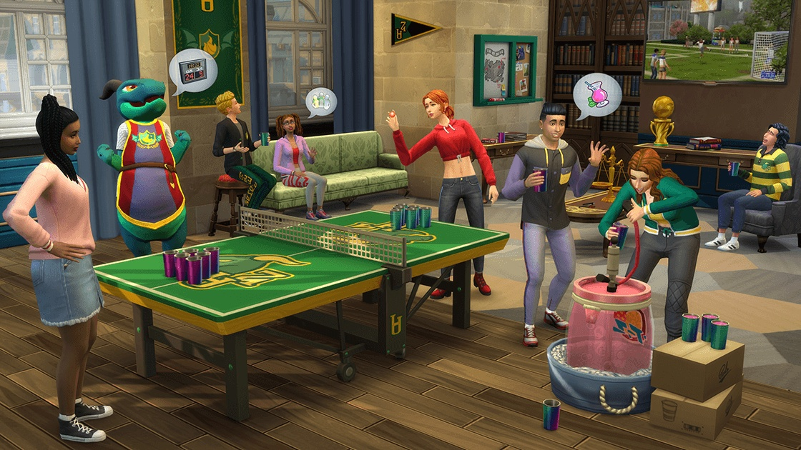

Предистория
The Sims это серия компьютерных игр, в жанре симультора жизни. Игрок управляет одним или несколькими персонажами — симами, заботится об их благополучии, развивает их навыки, укрепляет связи с другими персонажами, продвигает по карьерной лестнице и обустраивает их жилой дом. В игре отсутствует сюжетная линия, и теоретически в игру можно играть «вечно».
Первая игра была выпущена 31 января 2000 года, компанией Electronic Arts. Она была создана Уилллом Райтом вместе с компаниями Maxis и The Sims Studio. На данный момент было выпущено 4 игры, 34 дополнения, 33 каталога и 8 игровых наборов. Уилл Райт, дизайнер компьютерных игр и создатель симс, был вдохновлен на эту идею после потери своего дома в пожаре, в 1991 году.После выхода The Sims мгновенно стала бестселлером и в течение более, чем года возглавляла игровые чарты, а так же стала самой продаваемой игрой в США. The Sims уступила лишь впервые своё первенство в чартах игре Pool of Radiance: Ruins of Myth Drannor. в октябре 2001 года. В конце 2003 года большинство всех копий купленных компьютерных игр были копиями The Sims и её дополнений.
Уже к марту 2001 году The Sims стала самой продаваемой игрой в истории, обойдя рекорд проекта Myst. По оценкам Нейла Янга, ещё тогда главного руководителя Maxis, продажи The Sims в 2000 году составляли от 6% до 10% всего программного обеспечения
The Sims 3
Игра была выпущена в 2009 году, сама разработка началась уже в 2006 году. То насколько симс 3 превзошол симс 1 и 2 можно перечеслять очень долго, но главным достоинством этой серии является открытый мир, которого не хватало в предыдущих частях. А так же, улучшенные визуальные эффекты и поведение персонажей.
The Sims 4
Главная задача разработчиков четвёртого симулятора заключалась в усовершенствовании искусственного интеллекта персонажей и интеграции в их поведение многозадачности. Игра разрабатывалась с прицелом на беспроблемную работу даже на слабых компьютерах, поэтому для симулятора был выбран художественный стиль, требующий минимализма в деталях и текстурах.
